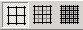

Use the Grid Resolution buttons to set the resolution of the .
The Drawing Board is covered by a grid. (You can't see it, but it's there.) When you draw or move , your mouse "snaps" to the grid line intersections, which are called . Joints can only be drawn at the snap points.
The Grid Resolution buttons are used to set the drawing grid to low, medium, or high resolution. At the low-resolution setting, you can place joints at 1.0 meter intervals. At the medium- and high-resolution settings, you can place joints at 0.5 meter and 0.25 meter intervals, respectively.
These three buttons work like "radio buttons." Only one of the three can be depressed at any given time When you click one, it remains depressed until you click either of the other two.
The Grid Resolution buttons are located on the Display Toolbar. They can also be accessed from the View menu.
When you click any of the Grid Resolution buttons, the on the Drawing Board will be updated to reflect the new grid resolution. For example, at low grid resolution, the rulers will only display markings at 1.0 meter intervals. At high grid resolution, markings will be displayed at 0.25 meter intervals.
It is generally best to create your using the low-resolution grid, because it is easier to control the placement of joints in this mode. Once you begin optimizing your design, you might want to switch to the medium- or high-resolution grid setting to refine the shape of your structural model more precisely.
When editing your structural model, you can use the keyboard arrows to move joints at 0.25 meter intervals--regardless of the current grid resolution setting. Thus you can take advantage of the high-resolution grid, even without using the Grid Resolution buttons.